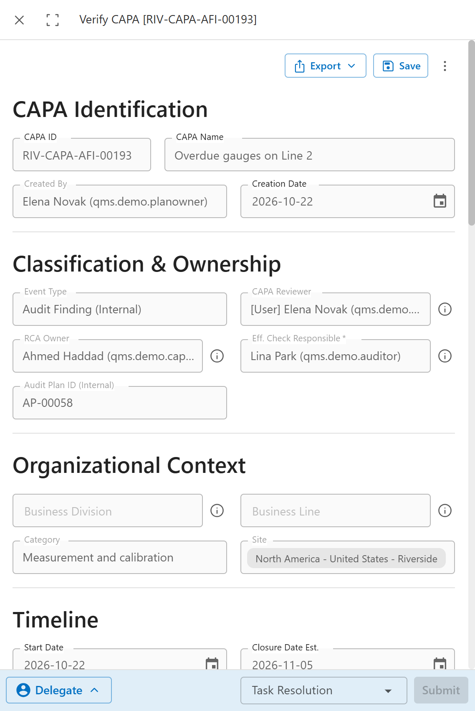

The ID tells you where it comes from. RIV is the Riverside site code, AFI means audit finding, internal.
Accept the CAPA
Elena checks that the problem is real and needs a CAPA, and that the right people are named.
The CAPA reviewer gets Review CAPA.
 12345
12345- Event Type: where the problem came from.
- RCA Owner finds the root cause.
- Eff. Check Responsible checks later that the fix worked.
- Audit Plan ID (Internal) links the CAPA to the audit.
- Approve sends the CAPA to the RCA owner. Reject sends it back to the person who opened it, as Modify CAPA.
Find the root cause
Ahmed asks why until the answer is something Cedar Valley controls. The gauges were overdue because nobody owned the calibration list.
The RCA owner gets Execute the Root Cause Analysis.
 1234
1234- RCA Method: how the cause was found, here 5 Whys. 5W, Comparative Analysis and 3x5 Why Analysis open worksheets for those methods.
- RCA Reason sorts the cause into a group, here Method.
- Unable to Determine the Root Cause, for the rare case where no cause can be found.
- Describe the root cause in plain words.
Plan the actions
Ahmed plans three actions for Jonas: a correction, a corrective action and a preventive action. Ahmed will sign each one off.
In the same task, the grid of action items has Add. Each new row opens a form for one action item: Action Item Name, Due Date, Priority, Type, Action Item Owner and Action Completion Reviewer, plus a description.
 123
123- Add creates an action item. Save and Close on its form adds it to the grid.
- The three actions, each with its own ID.
- Send for Verification hands the plan to the CAPA reviewer.
The action items wait until the plan is approved. Nobody gets a task for them yet.
Approve the plan
Elena checks that the actions match the root cause. Recalibrating gauges alone would not fix a missing owner.
The CAPA reviewer gets Verify CAPA.

1- Approve: Start Action Items sends each action item to its owner. Reject: Send Back for Revision returns the plan to the RCA owner.
Chapter 13 follows the action items.
Check that it worked
When every action is signed off, Lina checks Line 2. No gauge is overdue, and the reminder fired. She writes down the lesson for the rest of the company.
The effectiveness checker gets Check Effectiveness And Approve.
 1234
1234- Mark actions to be re-executed, used only when the fix did not work.
- Check Effectiveness Notes: what was checked.
- Effectiveness Check Result: what was found.
- Approve All Action(s) when it worked. Execute Action(s) sends the marked actions out again.
Describe the lessons learned from this issue, further down, must be filled in.
When the CAPA has a Frequency under Effectiveness Monitoring, approving also creates an effectiveness plan. It repeats the check at that frequency until Eff. End Date. Each check is a task Review Effectiveness Plan, answered with Effective or Trigger Action. The demo CAPA had no frequency set, and no plan was created.
Close the CAPA
Elena reads the record from the finding to the check and closes it.
The person who opened the CAPA gets Sign Off on the CAPA.
 123
123- The effectiveness check, as Lina left it.
- The lesson learned.
- CAPA Complete & Approve closes the CAPA. Reject: Send Back for Revision returns it to the RCA owner.
Common mistakes
- Approving a plan with only a correction in it. The cause stays, and the problem comes back.
- Filling in the effectiveness check on the day the actions finish. Give the fix time to show.
- Leaving the effectiveness notes empty. The person closing the CAPA has nothing to judge.
- Leaving Frequency empty when the check must repeat. Without it, no effectiveness plan is created.